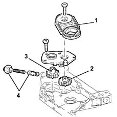

DESCRIPTION OF COMPONENTS
- Path
- Descriptions > 10 ENGINE > 1084 ENGINE LUBRICATION > 1084B ENGINE OIL LUBRICATION CIRCUIT > DESCRIPTION OF COMPONENTS
- Kind
- system description
- Applies to
- engines: 2.4 20V; all production periods
- Interactive page
- https://sloeber94.github.io/elrnDB-lThss/en/#/611047
Applies to: engines: 2.4 20V; all production periods
ENGINE OIL PUMP
Operation
General remarks
Oil is taken up from the sump due to the effect of a vacuum created by the rotation of the geared pump operated by the chain and thrust by the pressure in the filter and the ducts.
When pressure exceeds a preset level, a pressure relief valve opens and discharges the excess.
The pump is operated by a silent chain drive (1) that transmits drive from the crankshaft to pump drive gear (2).

- 1 - Silent chain
- 2 - Drive gear.
- 3 - Driven gear.
- 4 - Safety valve.